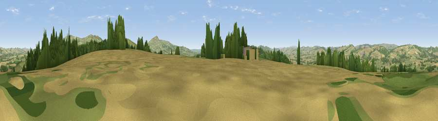

Viewpoint near Bouldon
#11065 in England · top 28% of its area beats it · near BouldonThe view, rendered

A 360° render of this exact spot computed from the terrain model, tree cover and land cover — summer colours, afternoon light, calibrated against photographs of famous viewpoints. Real trees, hedges and buildings will differ in detail.
The panorama
Grey silhouette: terrain skyline in each direction (720 bearings, Earth curvature and refraction included). Dashed green: skyline with trees (+15 m) and buildings (+8 m) as obstacles. Blue strip: how far the ground is visible on each bearing.
Where the view opens
Wedge length = distance to the farthest visible ground on that bearing (vegetation-aware). Rings at 10, 25 and 50 km.
What fills the view
54% grassland · 30% cropland · 16% woodland
Angular shares of the visible panorama (visual magnitude), not map area. Landscape diversity 0.44 (0–1 Shannon).
Key numbers
More beautiful places nearby
The staircase of upgrades: each row has a higher view potential than everything closer. Driving times are estimates from straight-line distance, calibrated against real road routing — check an actual route before setting out.
| Place | Direction | Drive | Score |
|---|---|---|---|
| Viewpoint near Stoke St Milborough | ESE · 2 km | ~6 min | 70.1 |
| Clee Burf | ENE · 6 km | ~13 min | 79.0 |
| Viewpoint near Burwarton | ENE · 7 km | ~14 min | 83.4 |
| Titterstone Clee | SE · 8 km | ~15 min | 83.8 |
| The Lawley | NNW · 15 km | ~27 min | 85.8 |
| Viewpoint near Little Wenlock | NNE · 27 km | ~43 min | 86.6 |
| North Hill | SSE · 43 km | ~63 min | 86.8 |
| Worcestershire Beacon | SSE · 44 km | ~64 min | 87.1 |
52.44004, -2.68879 · source: screening · position refined by local search. Computed location — check access rights before visiting.